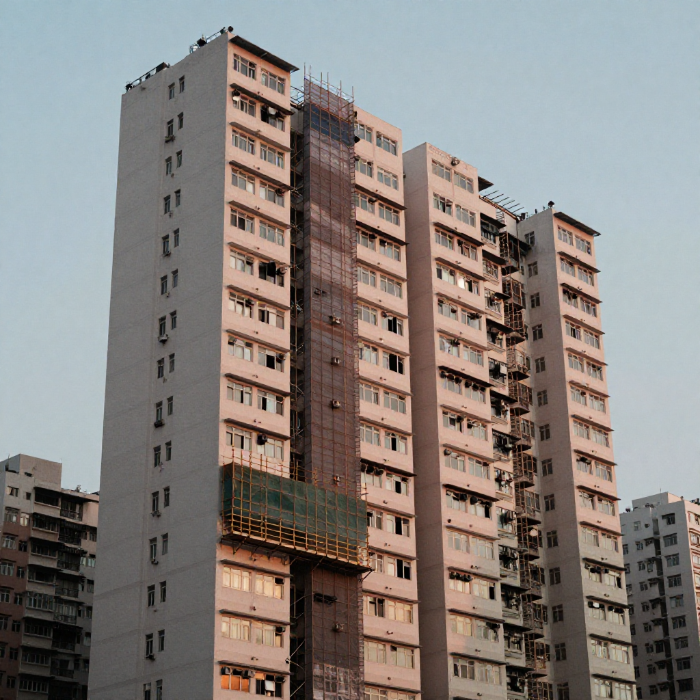
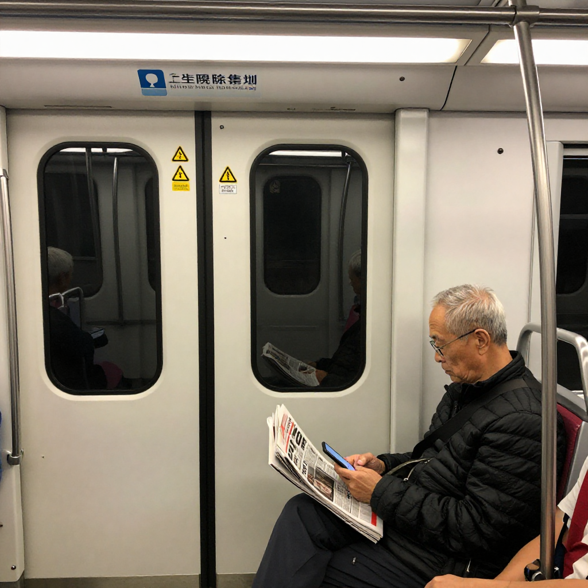
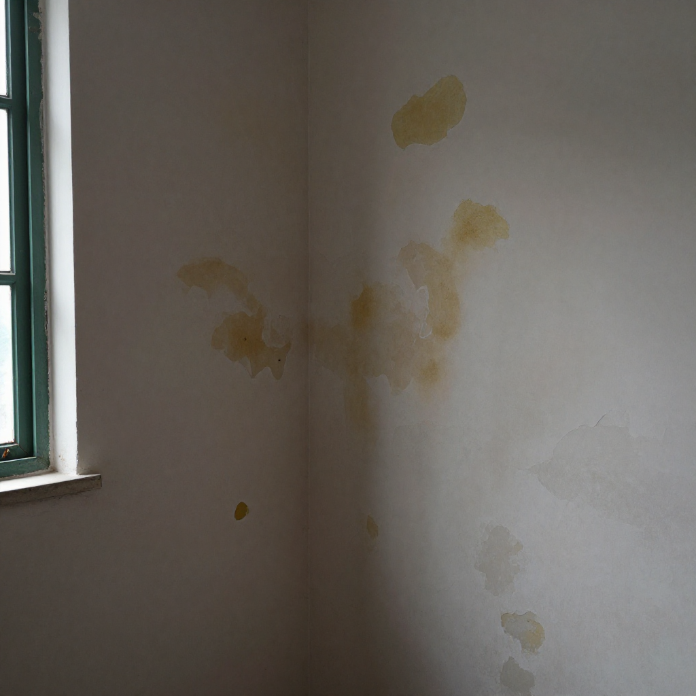

反圍標嗰日，我哋裝修佬去咗大維修嗰度做義工

📍 場景：大埔舊樓大維修工地｜主講：張丹楓｜整理：雲蕾｜日期：2026 年 9 月 22 日｜同行：祥叔（觀塘木行三十幾年老行尊）｜業主代表：林伯（化名，72 歲，大廈業主立案法團主席）｜WhatsApp 報價：852 5190 2328
序幕：九月二十二號朝早，發展局嗰張文件
九月二十二號朝早九點，我喺地鐵車廂望住手機——發展局局長甯漢豪向立法會提交咗一份文件，宣布反圍標改革：大維修顧問同承建商三張「預審名單」，9 月 30 日起接受申請，年底備妥名單，明年第一季正式為業主進行工程招標。門檻寫得清清楚楚——技術能力、誠信操守、財務能力、過往表現，缺一不可。廉記同警方背景審查、過去三年冇干犯《防止賄賂條例》、《競爭條例》、或者虛假文書嘅誠信相關罪行。
雲蕾坐喺我隔籬，望住文件入面嗰句「驗樓顧問同監督工程嘅顧問，要由不同人擔任」，問我：「丹楓，呢句咁淺白嘅規矩，點解要等到宏福苑嗰場火先有人寫出嚟？」
我答：「因為以前嘅圍標邏輯，就係由同一個工程顧問一路驗樓、一路監督、一路監督自己。所以權力冇制衡，金錢自然圍標。」
祥叔喺另一邊搖頭：「裝修佬見呢種規標場面見咗三十年。我哋做小工程嗰陣，業主立案法團主席通常都係一個老人家——佢唔識工程、唔識合約、唔識底價，俾幾個工程公司圍住報價，每個都坐得低少少，坐低少少，坐低少少。最後個工程做咗十年八年先發現——外牆紙皮、石屎鬆散、防水唔到。」
我哋三個喺大埔墟站落車。今日要去嗰棟大廈，就係林伯（化名）嗰棟樓——大埔舊樓，44 年樓齡，剛開咗業主大會通過大維修方案。林伯喺電話嗰邊同我講：「張師傅，我哋大廈要第一次做大維修，但你哋要明白——我哋業主會入面個個都係老人家，平均年齡 65 歲。我哋個法團委員，加埋 9 個人，最老嗰個 78 歲，最後生嗰個都 61 歲。我哋唔識睇合約、唔識睇標書，俾人圍過一次標。今次我想請你上嚟做義工——唔係裝修，係教我哋點樣睇合約、點樣問問題、點樣分真嘅承建商同假嘅承建商。」

第一幕：林伯嗰份圍標合約
開門，林伯即刻攞出一疊文件。
「張師傅，你睇吓呢份合約。嗰陣 2022 年第一次大維修招標，三間公司投標——A 報 380 萬、B 報 420 萬、C 報 450 萬。我哋法團當時揀咗 A，平就平啲嘛。」
我攤開合約一頁頁睇。祥叔喺旁邊一齊睇。
祥叔一頁頁指：「林伯，你睇呢度——A 嗰份標書寫住『外牆採用 6mm 厚防水砂漿』，B 同 C 寫嘅係『8mm 厚防水砂漿』。6mm 同 8mm，差 2mm。你哋法團當時點解唔問？」
「我哋唔識吖嘛。我哋嗰陣以為寫咗字就係合約。」
祥叔即刻攞起筆：「6mm 嘅砂漿用落去，凍漲熱縮兩年就裂；8mm 嘅砂漿用落去，十年都唔裂。你嗰 380 萬嘅合約，用咗 6mm 嘅砂漿，做完兩年外牆開始滲水——你哋住嗰陣 5 樓嗰個單位、12 樓嗰個單位，係咪已經投訴咗？」
「你哋點知？」
祥叔寫低：「林伯合約第 8 條：6mm 砂漿，造價 380 萬。同期同類大廈用 8mm 砂漿，造價 420-450 萬。差價 40-70 萬，用嚟換嗰 2mm 砂漿——你話值唔值？」
雲蕾寫低：「6mm 同 8mm 嘅砂漿，差 2mm，差 40 萬——呢啲就係圍標嗰個數。」
林伯聽到呢度，眼眶即刻紅：「張師傅，當年嗰 380 萬，我哋老人家俾人呃咗。今日發展局嗰份文件出嚟，9 月 30 號就接受申請——我哋想再申請一次，唔想再俾人圍。」
我答：「林伯，今日我哋三個人嚟做義工，就係想教你哋點樣睇合約、點樣問問題、點樣分真嘅承建商同假嘅承建商。」
第二幕：祥叔嗰句「十年唔拆嘅嘢，唔好打實」
收工前，林伯帶我哋上咗 7 樓嗰個單位——嗰度就係林伯自己間屋。顧慮 6mm 砂漿嗰 2mm，兩年滲水入到嚟，主人房嘅牆身發咗霉。
林伯太（化名黃太）揀住一塊發霉嘅牆板：「張師傅，你嚟睇吓呢幅牆。我哋瞓覺都要開冷氣，唔係因為熱，係因為怕嗰幅霉菌會發出嗰種味。」
「黃太，呢幅牆唔可以保留外面嗰層 6mm 砂漿——要剷到見石屎，然後重新做 8mm 砂漿，加一層防水底漆，最後先油面漆。呢個工序唔係幾千蚊嘅事，係兩萬蚊嘅嘢。」
我問：「黃太，你哋當年嗰份合約包唔包呢兩萬蚊？」
「當年合約寫住『外牆防水』，但係寫住寫住就寫成『外牆採用 6mm 砂漿』——6mm 同 8mm 嘅分別，我哋當時唔識問。」
祥叔嘆咗口氣：「裝修呢行最怕就係兩個字——『固定』。固定層板、固定砂漿、固定工序。你固定得越死，將來要修嘅時候就越難。你嗰 6mm 砂漿固定落去，兩年發霉，剷起重新造——成個工序重來。你睇宏福苑嗰單，承建商用嘅係非阻燃發泡膠固定落去，一場火燒出幾十條人命。」
雲蕾喺記事簿寫低：「祥叔原話：『固定得越死，將來要修嘅時候就越難。』」
我答黃太：「黃太，今日我哋上嚟做義工，唔係做裝修——係教你哋，你哋將來同新承建商傾合約嗰陣，要問三個問題。」

第三幕：三條鐵律——問問題、查背景、寫工序
黃太攞個記事簿出嚟，準備寫。
「第一條鐵律，問問題。」
「你哋以後見到任何一份工程合約，要問以下五個問題：
1. 砂漿幾厚？寫住嘅係 6mm 定 8mm？差幾多錢？
2. 防水層用乜嘢牌子？寫住嘅係國產定進口？差幾耐？
3. 外牆油漆幾層？底漆、面漆、保護層，寫唔寫得出嚟？
4. 保養期幾耐？唔可以少過五年。
5. 驗收程序點樣？唔可以寫『完工後驗收』咁含糊——要寫清楚『每層獨立檢驗』、『無人機全面勘察』、『第三方公證行報告』。」
「最忌就係『總價』兩個字。你睇嗰份 380 萬合約——總價寫得靚靚，但係每項工序寫得含糊。圍標嘅工程公司，最鍾意就係將所有嘢寫入『總價』，等業主睇唔到每個工序嘅細節。你要拒絕合約入面嘅『總價』字眼——要逐項列明、逐項報價、逐項驗收。」
「第二條鐵律，查背景。」
「你哋見到任何一間承建商，要查以下五樣：
1. 公司註冊資料——『公司註冊處』網上查冊，3 分鐘查到。
2. 過往工程紀錄——去『拓展署』同『市建局』網上查，佢哋嘅過往大維修紀錄。
3. 廉記定罪紀錄——發展局今次嘅預審名單，已經查咗廉記同警方嘅背景。
4. 違規紀錄——去『發展局』嗰個公開紀錄，睇佢哋過往有冇被罰款、暫停投標資格。」
「今次發展局嘅預審名單，已經包含咗廉記查喎啦——你哋將來揀承建商，係由呢度開始揀。」
「第三條鐵律，寫工序。」
「你哋合約唔可以淨係寫總價、寫工期——要逐項工序寫清楚。每項工序要寫：
1. 材料牌子、產地、規格——唔可以寫『國產』、『防水』、『防火』咁含糊。
2. 施工方法——唔可以寫『按承建商建議』，要寫明『按圖紙』、『按工程師指示』嘅。
3. 驗收程序——每項工序完成後，點樣驗收、由邊個驗收、驗收唔合格嘅話點處理。
4. 保養期——完工後幾多年內負責保養，保養期內出咗事要修，邊個負責。」
祥叔喺旁邊寫低：「黃太合約要加嘅 5 項：砂漿厚度寫明 8mm、防水層寫明牌子、油漆寫明幾層、保養期寫明五年、驗收寫明每層獨立檢驗。」
雲蕾寫低：「三條鐵律：問問題、查背景、寫工序。」
第四幕：發展局嗰份文件入面，裝修佬見到嘅嘢
收工前，祥叔攞出今日帶嚟嘅發展局文件，再睇多次。
「林伯，你哋今日開始申請預審名單嗰陣，要留意三樣嘢。」
「第一，廉記查喎。」祥叔指住文件：「發展局寫住『公司及其主要人員、指定僱員與持有逾 25% 股權嘅重要控制人，必須通過警方及廉政公署嘅背景審查』——呢句嘢以前冇寫過。以前大維修嘅承建商，只要肯低價就得。今日開始，要通過廉記查喎。」
「第二，誠信相關罪行。」祥叔指住：「過去三年內『未曾干犯《防止賄賂條例》、《競爭條例》或虛假文書等誠信相關罪行』——呢句嘢以前冇寫過。以前大維修嘅承建商，俾人揭發圍標，最後罰款、警告就算。今日開始，三年內幹過唔可以講。」
「第三，ISO 9001 認證。」祥叔指住：「所有參與顧問同承建商必須獲得或承諾喺 12 個月內取得《ISO 9001》品質管理系統認證——以前冇要求。今日開始，要有。」
「祥叔，咁你哋裝修佬呢？你哋裝修佬喺今次嘅預審名單入面，定係被排除喺外面？」
祥叔答：「林伯，我哋裝修佬做嘅係室內訂造——唔係外牆大維修。我哋今日嚟做義工，係因為我哋見過太多圍標場面——6mm 砂漿、固定層板、非阻燃膠板，每一樣都係呃老人家。今日發展局嗰份文件出嚟，我哋裝修佬見到嘅係——呢個係遲到嘅正義。」
林伯聽到「遲到嘅正義」呢四個字，眼眶即刻紅。
我答：「林伯，你哋將來揀承建商，係用呢三個工具：預審名單、廉記查喎、ISO 認證。你哋業主會入面嘅老人家，今日開始唔使再俾人圍標。」
雲蕾寫低：「發展局三張預審名單：驗樓顧問、工程監督、承建商。你哋業主，以後要由呢三張名單揀。」
尾聲：搭車要正價，訂造要實淨，大維修要查廉記
收工，林伯送我哋落樓梯。
「張師傅，今日你哋上嚟做義工，我哋老人家學到三樣嘢——問問題、查背景、寫工序。呢三樣嘢，以前大維修嗰陣唔識，今日開始識。你哋裝修佬做嘅嘢，唔係淨係裝櫃、刨板、訂造——係要識呢個行業嘅規矩、呢個行業嘅廉潔、呢個行業嘅良心。」
「林伯，你講得啱。裝修佬呢行，最緊要就係兩樣嘢——寫單據、寫工序。你寫得清楚，你將來就維權得到。」
林伯太（黃太）攞出兩個柑：「你哋帶返去啦，今朝行過大埔街市見到啲柑幾靚，買咗兩個送你哋做生果。你哋今日上嚟做義工，教我哋老人家點樣睇合約，我哋自然會回報你。」
「唔使客氣，黃太。你住咗 44 年舊樓，依家再做第二次大維修，呢度就係你哋嘅屋。十年後嗰陣，你哋再上樓會見到我哋上嚟做義工——問你哋：『嗰份合約寫清楚未呀？』」
搭港鐵返屋企，我特登用八達通拍正價出閘。林伯講得啱：搭車要正價，訂造要實淨，大維修要查廉記——呢啲唔係大道理，係細藝。
我諗起林伯嗰句「遲到嘅正義」，諗起祥叔嗰句「固定得越死，將來要修嘅時候就越難」，諗起今天發展局文件入面嗰句「驗樓同監督要分拆」。
大維修係過渡，但訂造嘅心意唔係過渡。
我哋裝修佬就係要記住：每一塊板、每一支膠、每一口漆，裝落人哋屋企，就係裝落人哋嘅命。大埔林伯住四十四年，宏福苑嗰啲街坊住二十幾年，屋企係乜料佢哋唔知，但出事就知。我哋做嘅嘢，係要對得住十年、二十年後嗰個拆櫃換板嘅人。裝修佬做義工唔係新事，但裝修佬肯上嚟教老人家睇合約、查廉記、寫工序——今日開始，呢個就係香港大維修嘅新細藝。
「裝修佬唔係淨係識刨板、識裝嵌——係要識呢個行業嘅規矩、呢個行業嘅廉潔、呢個行業嘅良心。」
——林伯口述，張丹楓筆記，雲蕾整理，二〇二六年九月二十二日，大埔舊樓大維修工地
❓ 反圍標三問
Q1：點解發展局今次要推大維修預審名單？以前嘅大維修有咩漏洞？
以前大維修嘅漏洞，就係驗樓、工程監督、承建商可以由同一個工程公司擔任——權力冇制衡、金錢自然圍標。業主立案法團通常由老人家組成，唔識工程、唔識合約、唔識底價，俾幾個工程公司圍住報價。預審名單寫入廉記查喎、ISO 認證、誠信相關罪行審查——就係將圍標嘅空間堵死。香港嘅大維修，終於由「最平者得」變成「最廉潔者得」。
Q2：6mm 同 8mm 嘅砂漿，分別喺邊度？點解差 2mm 差成 40 萬？
6mm 砂漿同 8mm 砂漿最大分別係耐久性。6mm 砂漿用落去，凍漲熱縮兩年就裂；8mm 砂漿用落去，十年都唔裂。材料成本方面，6mm 同 8mm 嘅砂漿差唔多幾萬蚊；但工程造價方面，差嘅唔係材料，差嘅係「工序重做」嘅成本——6mm 砂漿兩年後裂咗，要剷起重新造，連工包料得返兩萬蚊；8mm 砂漿用十年都唔使理。所以差嗰 40 萬，唔係材料差，係「將來要重做」嘅成本差。裝修佬見呢個林伯合約嗰陣，已經即刻點同識——呢啲就係圍標嗰個數。
Q3：裝修佬做義工教老人家睇合約，有咩用？
裝修佬見過太多圍標場面——6mm 砂漿、固定層板、非阻燃膠板，每一樣都係呃老人家。裝修佬做義工唔係淨係教老人家點樣睇合約，係教佢哋點樣分真嘅承建商同假嘅承建商。今次發展局嗰份反圍標預審名單出咗，裝修佬上嚟教老人家點樣用呢個名單、點樣查廉記、點樣查 ISO、點樣寫工序——就係用裝修佬嘅細藝，配合政府嘅規矩，將圍標堵死。裝修佬唔係淨係識刨板、識裝嵌——係要識呢個行業嘅規矩、呢個行業嘅廉潔、呢個行業嘅良心。
本文配圖均為 AI 場景示意圖，僅供場景參考，並非真實工地照片或業主影像。
想知你個單位裝修要幾錢？
📱 一鍵 WhatsApp 張丹楓